Signed is
not safe.
AI-ChainGuard signs every stage of an AI pipeline, from the dataset to the deployed model, links the stages by their digests and refuses to deploy anything that fails verification. Then we measured what that guarantee covers. Every manipulation made after signing was caught. A dataset poisoned before signing passed every check and was deployed.
A six-page IEEE-format paper in English and French, from the MSc in Cybersecurity and Data Science at ESAIP École d'Ingénieurs, Angers (Projet Applicatif 2, November 2026).
What the deployed model does
- Accuracy on clean test digits
- 94.2 %
- Other digits stamped with a 2×2 corner patch, read as 7
- 77.2 %
What a signature proves, and what it does not
Seven experiments, 48 attack and control variants, one real pipeline: four attested stages around a small convolutional network for 8×8 handwritten digits. Experiments 6 and 7 measure what lies beyond the reach of signatures.

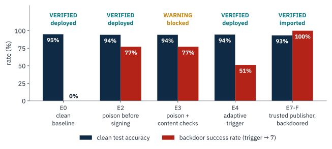
A VERIFIED status proves
- who attested each artifact in the chain, and under which role;
- that no byte, row, parent link or signature has changed since;
- that every signer was trusted for its stage and is not revoked, according to the signed trust log.
It does not prove
- that the data was clean when it was signed (E2: 77.2 % backdoor success);
- that a trusted publisher's model is harmless (E7-F: 100 %);
- that content checks stop an adaptive attacker (E4: 51.2 %, still VERIFIED).
Content checks run before signing count as evidence, not proof. They flagged the known trigger in E3, the model went to WARNING and the gateway blocked it by default; they missed the adaptive trigger in E4. AI-ChainGuard therefore reports the two kinds of evidence separately: checks V0 to V8 are cryptographic, V9 is about content, and a heuristic can never produce a FAILED, nor a signature a “safe”.
Every manipulation after signing was caught
Each variant starts from a fresh copy of a clean, fully attested chain, applies one manipulation with the access an attacker would have, then verifies the target with its whole chain. All 48 variants produced the predicted verdict. Detection took 1.7 to 15.1 ms, chain included (median 7.5 ms).

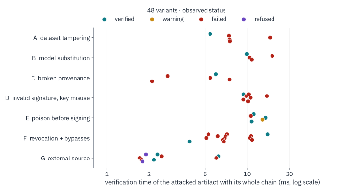
The manipulations range from the subtle to the structural: flipping the labels of five rows, appending one row or a single trailing space to a signed dataset; nudging one weight by 10−6 or re-saving identical weights in another format; re-signing a modified parent with the legitimate key; presenting a model with no dataset ancestry; replaying signatures, using a key in the wrong role, or signing with unknown or revoked keys.
| Exp. | Experiment (scenario) | Variants | Outcome | Checks that fired |
|---|---|---|---|---|
| 1 | Dataset tampering (A) | 5 | control VERIFIED; 4 FAILED | V1, V2, V6 |
| 2 | Model substitution (B) | 4 | control VERIFIED; 3 FAILED | V1 |
| 3 | Invalid signature, key misuse (D) | 7 | control VERIFIED; 6 FAILED | V3, V4, V6 |
| 4 | Broken provenance (C) | 5 | control VERIFIED; 4 FAILED | V3, V5, V8 |
| 5 | Revocation and 8 bypasses (F) | 13 | 2 VERIFIED as predicted; 11 FAILED, deployment blocked | V3, V4, V6, V7 |
| 6 | Poison before signing (E) | 5 | E0 control VERIFIED; E1 FAILED; E3 WARNING; E2, E4 VERIFIED | V6, V9 |
| 7 | Untrusted external source (G) | 9 | 3 VERIFIED; 4 FAILED; 2 REFUSED at import | V1, V3, V4, V6 |
Attacks on the trust itself
After a base model is revoked, eight bypasses try to make its fine-tuned descendant verify again. All eight fail.
| Bypass | What the attacker does | Result | Checks |
|---|---|---|---|
| C1 | Deletes the revoked artifact's row from the SQLite index | FAILED | V7 |
| C2 | Deletes the revoked key from the index | FAILED | V4, V6 |
| C3 | Overwrites the cached status | FAILED | V6, V7 |
| C4 | Clears the revoked flag in the index (the documented limit of version 0.3) | FAILED, INDEX_TAMPERING raised | V6, V7 |
| C5 | Writes a rogue key with the training role into the index and re-signs a substituted model | FAILED | V3, V4 |
| C6 | Truncates the trust log to before the revocation (rollback) | FAILED | V3, V4, V6, V7 |
| C7 | Edits a trust-log record in place | FAILED | V3, V4, V6, V7 |
| C8 | Deletes the trust log | FAILED | V3, V4, V6, V7 |
What remains trusted is the keys directory: whoever holds the root key and can rewrite the pin file controls trust decisions.
How AI-ChainGuard works
Every artifact gets a signed manifest whose payload embeds the manifest digests of its parents, so the lineage becomes one hash-linked graph, the way Git commits are linked. A verifier checks that graph, and a gateway refuses to load a model that does not verify.
- Stage 1Datasetsdata_steward
SHA-256 of the file and a Merkle root over its rows, so a report can name the changed lines.
- Stage 2Base modeltraining_pipeline
Must descend from a signed training dataset.
- Stage 3Fine-tuned modeltraining_pipeline
Parents: a fine-tuning dataset and exactly one base model, internal or external.
- Stage 4Deploymentdeployment_gateway
Verifies the whole chain once, loads the model from the verified bytes, smoke-tests it and signs a deployment record.
Signed by its publisher (model_publisher). Only the publisher's public key is registered, out of band. Unsigned or malformed imports are refused and failed ones quarantined. Provenance ends at the publisher.
Keys, roles and revocations as hash-chained records signed by the root key (release_manager), with the head pinned. Every verification replays it; a truncated, edited, deleted or substituted log fails closed.
The signed manifest
The whole manifest body is serialised as canonical JSON and signed with Ed25519, not just the file hash, so nobody can keep a valid hash and signature while changing the stage, the parents or the role around them. The SHA-256 of that body is the artifact's identity: rewriting an ancestor, even re-signed with the legitimate key, changes it and breaks every descendant.
Signed payload of a fine-tuned model (excerpt, digests shortened):
{
"artifact_name": "digits-finetuned-cnn",
"artifact_type": "finetuned_model",
"pipeline_stage": "stage3_finetune",
"subject": {
"sha256": "95cba5f7…317e5b",
"size_bytes": 153944,
"media_type": "application/safetensors"
},
"parents": [
{
"manifest_digest": "sha256:c8df3c8c…0bfddb",
"relation": "fine_tuned_from"
},
{
"manifest_digest": "sha256:51a1aec7…b60272",
"relation": "trained_on"
}
],
"signer": {
"identity": "training_pipeline@chainguard.local",
"role": "training_pipeline",
"key_id": "ed25519:0dda1db0a6406ccd"
}
}Ten checks, three verdicts
A verification runs ten checks and descends into every parent. The verdict is derived, never stored: FAILED if any check fails, WARNING if integrity holds but a content check flagged the data here or upstream, VERIFIED otherwise.
| Check | Fails when | |
|---|---|---|
| V0 | Envelope | missing, malformed, or stored under another id |
| V1 | File hash | SHA-256 or size differs from the signed values |
| V2 | Dataset Merkle root | rows changed (the report lists which lines) |
| V3 | Ed25519 signature | invalid over the canonical body, or key not in the signed trust log |
| V4 | Signer trust | key revoked, role or identity mismatch, role not allowed for the stage, index and log disagree |
| V5 | Parent links | a parent envelope is missing or its recomputed digest differs from the embedded one |
| V6 | Ancestry | any ancestor FAILED (recursive) |
| V7 | Revocation | artifact or ancestor revoked in the signed log, index row deleted, or index flag cleared against the log |
| V8 | Policy | wrong type for the stage, missing or forbidden parent types, parent from a later stage |
| V9 | Content flags | a signed pre-attestation content check flagged the data here or upstream: WARNING only |
The deployment gateway
It verifies the full chain at deployment time, once per deployment and never per prediction. It refuses a FAILED model and, by default, a WARNING one, and refuses pickle-based formats. It reads the model bytes once, re-hashes them and loads the model from those same bytes, so there is no time-of-check to time-of-use gap. It then runs a smoke test on held-out data and signs a deployment record bound to the trust-log head it used.
Interoperability
Any attestation exports as an in-toto Statement v1 inside a DSSE envelope, signed with the role key of the original manifest, with either a ChainGuard predicate or a SLSA Provenance v1 predicate in which the training step is the build and the dataset and base model are its resolved dependencies. An independent DSSE verifier checks the export in the test suite, including the specification's PAE test vector.
How it compares
Capabilities as documented by each project, November 2026. “no” means not a goal of that tool. No column reaches “yes” for poisoned content: that is the boundary measured above.
| Sigstore / cosign | OpenSSF Model Signing | in-toto layouts, SLSA provenance | Model cards, ML-BOM, registries (MLflow, DVC) | Backdoor scanners | AI-ChainGuard | |
|---|---|---|---|---|---|---|
| Scope | one artifact (OCI image, blob) | a model directory | steps of a software build | description, inventory, versions | model behaviour | dataset, base model, fine-tune, deployment |
| Links stages | no | no | layout links steps; build inputs recorded | metadata lineage | no | yes: parent manifest digests inside each signed payload |
| Who may sign what | identity policies | signer identity | functionaries per step; builder identity | platform access control | n/a | role per stage, verified (V4, V8); external publishers |
| Revocation | certificate expiry, log | Sigstore ecosystem | key revocation in layout | stage transitions | n/a | signed, pinned, append-only log; propagates to descendants |
| Deployment decision | admission controllers | no | verification of the final product | no | no | gateway: verify at deployment, safe load, smoke test, signed record |
| Poisoned content | no | no | no | no | partial, heuristic | partial: heuristics give WARNING only; measured, not claimed |
What it costs
Attestation runs once per artifact and verification once per deployment, never per prediction.

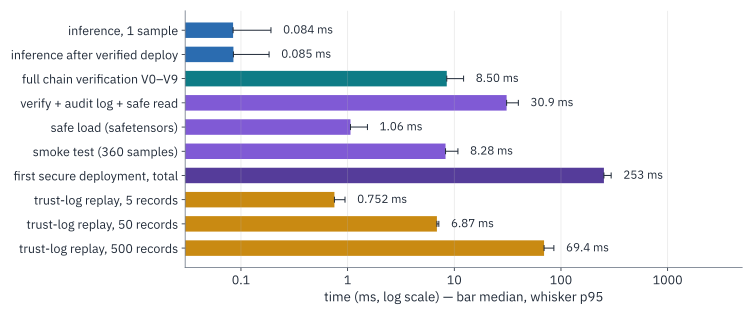
- Attesting the four artifacts of the pipeline
- 10.7 ms against 1,288 ms of training (0.83 %)
- Full-chain verification (fine-tuned model and its three ancestors)
- 8.5 ms median, p95 12.2 ms, 200 runs
- One prediction, before and after the verified deployment
- 0.084 ms and 0.085 ms
- First secure deployment, paid once
- 253 ms, of which 31 ms verification, audit writes and safe read, 1.1 ms safetensors load, 8.3 ms smoke test; the rest signs and registers the deployment record
- Signed manifest
- 1.4 to 3.1 KB per artifact
- SHA-256 and Ed25519
- about 1.2 GB/s (256 MiB in 220 ms); sign 0.04 ms, verify 0.12 to 0.14 ms
- Trust-log replay, every signature checked
- about 0.14 ms per record: 0.75, 6.9, 69 and 288 ms for 5, 50, 500 and 2,000 records
- Code
- about 8,200 lines of Python and 1,600 lines of tests (168 tests)
The dashboard
The same library drives a command-line tool, a REST API and a Streamlit dashboard. Screenshots from the run of 9 November 2026; select one to open it full size.
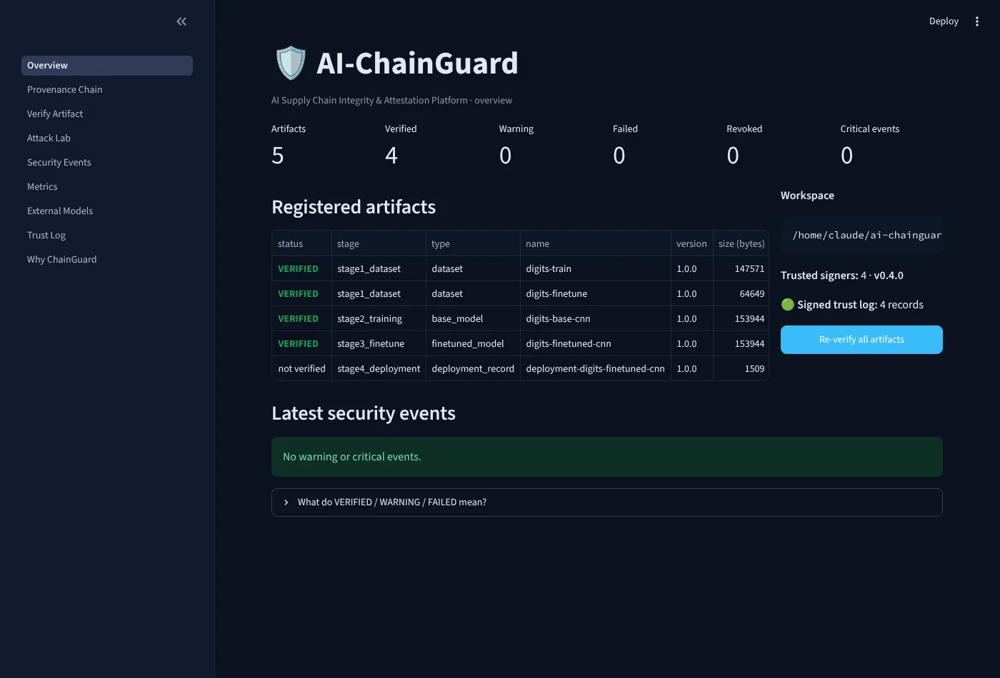
Overview. The five registered artifacts of the pipeline, their status and the signed trust log. 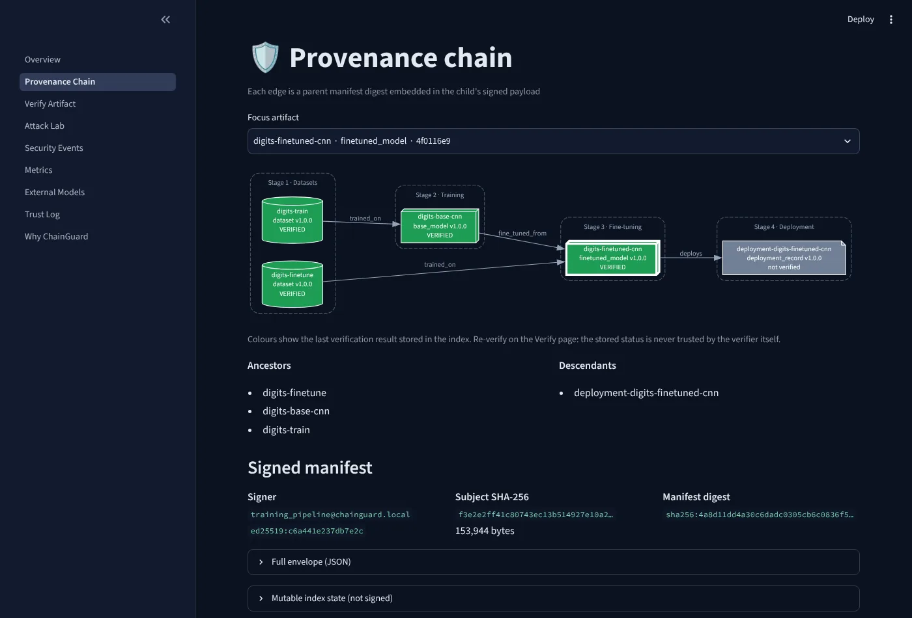
Provenance chain. Each edge is a parent manifest digest inside the child's signed payload. 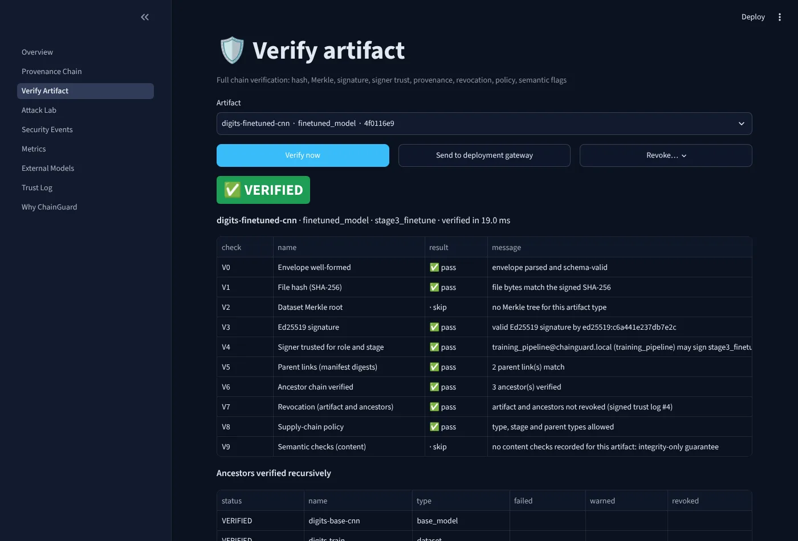
Verify artifact. The ten checks for any artifact, with its ancestors. 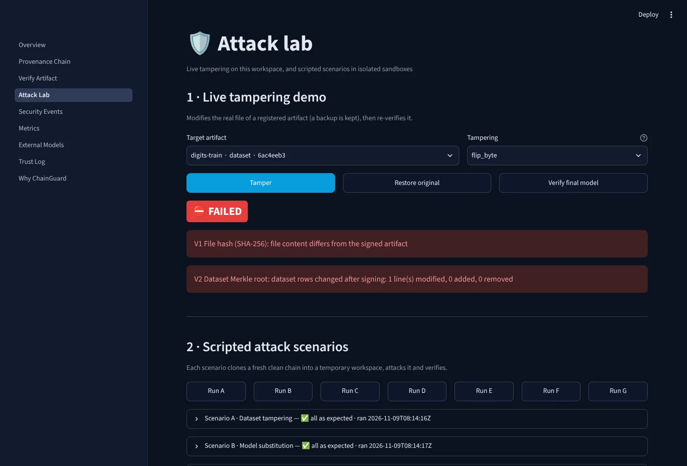
Attack lab. One byte of the training set flipped: FAILED, with V1 and V2 naming the changed line. 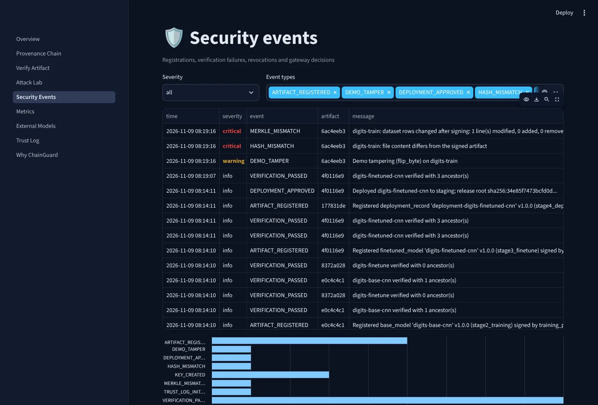
Security events. Verifications, failures and refusals, as they happened. 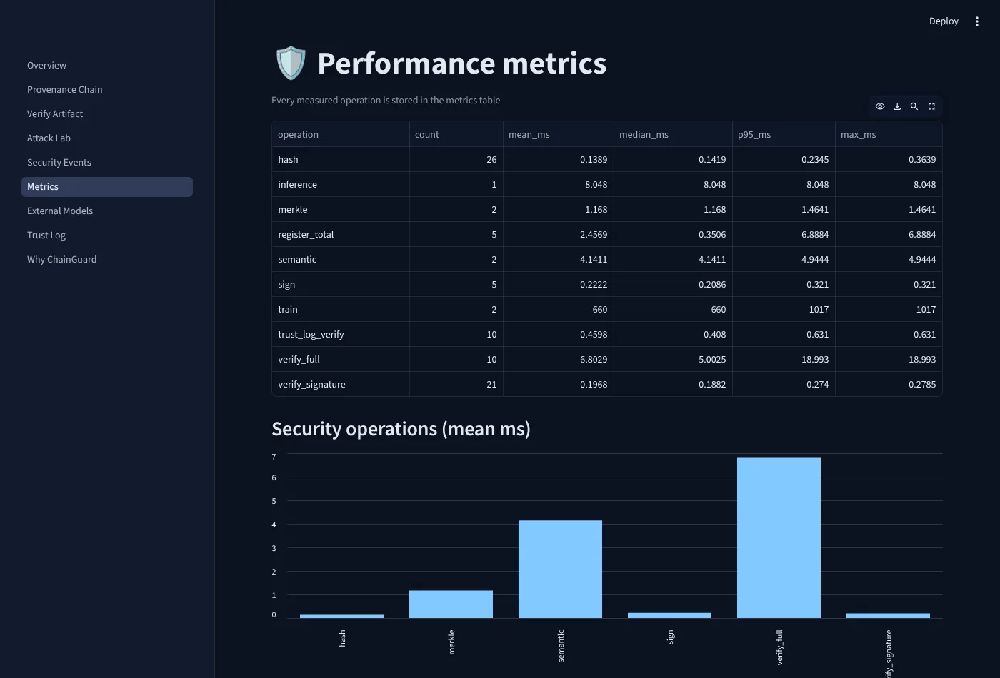
Metrics. Timings recorded by the platform during the run. 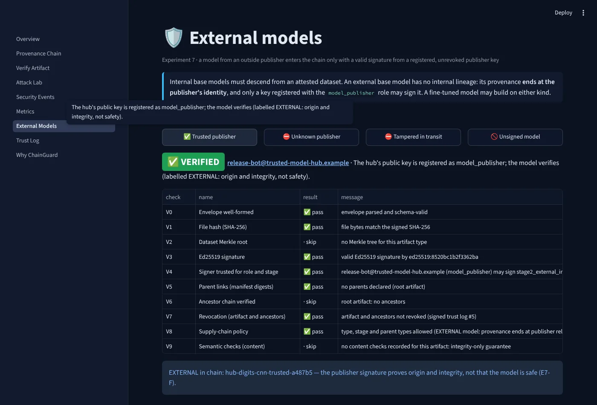
External models. Imports from a trusted publisher, an unknown one, and an unsigned model. 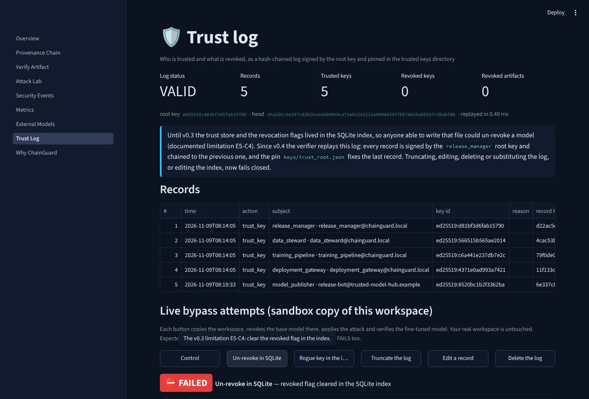
Trust log. The signed log replayed and valid; a bypass attempt on a sandbox copy fails. 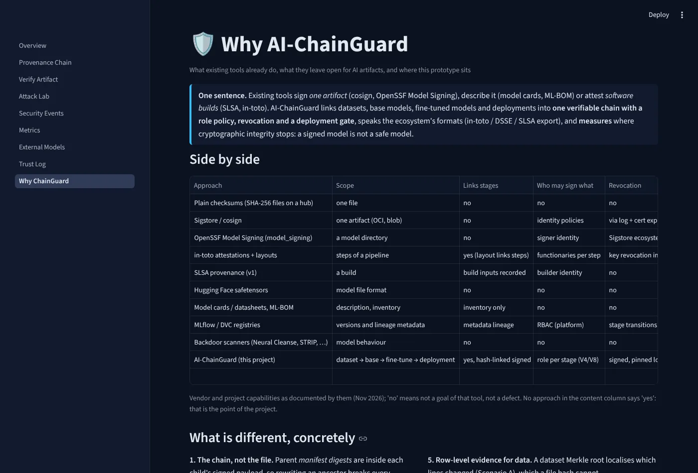
Why ChainGuard. The comparison with existing tools.


Run it yourself
Python 3.11 or newer, no GPU. The demo builds a fresh attested chain, attacks it and verifies it, step by step.
Continuous integration: both GitHub Actions workflows passed on 9 November 2026, on Python 3.11. One lints and runs the 168 tests. The other attests the pipeline, re-verifies the deployed model, checks that tampering is caught and replays the attack scenarios. See the runs.
git clone https://github.com/domail2karandeshmukh-cyber/ai-chainguard
cd ai-chainguard
python -m venv .venv && source .venv/bin/activate
pip install torch --index-url https://download.pytorch.org/whl/cpu
pip install -r requirements-dev.txt
python -m scripts.demo # 15-step demo, pauses between steps
make standalone # the dashboard, no API process needed
make up # Docker Compose: API and dashboard
make test # the 168 testsLimitations
The measurements are an upper bound on what the design offers.
- The attack suite is written by the defenders and runs on a small network for 8×8 digits. It shows that the cryptographic checks behave as designed and how large the semantic gap is on a small model, not how large it is for a language model, where poisoning is cheaper.
- The content checks are simple heuristics, chosen to show that they can be evaded (E4). Stronger defences such as Neural Cleanse, STRIP or spectral signatures would raise the bar without closing it.
- Trust rests on long-lived Ed25519 keys stored in files: a stolen key that has not been revoked signs valid manifests. Short-lived keyless certificates (Sigstore) or hardware-backed keys address this.
- The trust log is local and has a single writer: a stale copy would miss a recent revocation, and the pin file is as critical as the root key. Publishing the log to a shared transparency log such as Rekor is the next step.
- The canonical JSON form is Python-specific rather than RFC 8785, the API has no authentication, and the gateway verifies the chain twice on a first deployment.
- The benchmarks were measured in one environment, described below. The tests also pass on GitHub Actions, and the Docker Compose deployment ran on a team laptop (MacBook Air, 16 October 2026). AI-ChainGuard runs locally; this page is a static summary, not a hosted service.
The paper
Signed Is Not Safe: Measuring the Boundary Between Cryptographic Integrity and Semantic Trust in AI Supply Chains
A deployed model is the product of datasets, pretrained weights and fine-tuning steps from different parties, yet software supply-chain controls sign one build or one file and say nothing about this lineage or about what a valid signature means for a model's behaviour. We present AI-ChainGuard, a prototype that gives every artifact of an AI pipeline, from dataset to deployment record, a signed manifest whose payload embeds the manifest digests of its parents. The result is a hash-linked provenance graph that a verifier validates with ten checks. Trust and revocation live in a signed, pinned, append-only log, and a deployment gateway verifies the whole chain at deployment time before loading a model from the verified bytes. We then measure the boundary of such guarantees with a reproducible suite of 48 attack and control variants in seven experiments. Every post-signing manipulation in the suite, from a 10−6 change to one weight to the truncation of the trust log, is detected in 1.7–15.1 ms including the chain. But a dataset poisoned before signing verifies and deploys with a 77 % backdoor success rate behind a VERIFIED status, an adaptive trigger evades content heuristics at 51 %, and a trusted publisher's backdoored model verifies with 100 %. Attestation costs 0.8 % of training time, 8.5 ms per full-chain verification, nothing per inference and 1.4–3.1 KB per manifest, and exports as in-toto/DSSE attestations with ChainGuard or SLSA predicates. We argue that AI supply-chain controls must report cryptographic and semantic evidence separately, and release code, tests and scenarios.
IEEE conference format, six pages in each language, with the same sections, tables, figures, references and numbers. The figures are vector drawings generated from the evaluation data.
Cite
@misc{deshmukh2026signed,
title = {Signed Is Not Safe: Measuring the Boundary
Between Cryptographic Integrity and Semantic
Trust in AI Supply Chains},
author = {Deshmukh, Karan and Jogi, Sudheer Reddy and
Dama, Dola Krishna and Mekala, Rambabu},
year = {2026},
note = {ESAIP \'Ecole d'Ing\'enieurs, Angers.
MSc Cybersecurity and Data Science,
Projet Applicatif 2},
url = {https://github.com/domail2karandeshmukh-cyber/ai-chainguard}
}Team
- Karan DESHMUKHTechnical lead and security architecture: backend, provenance, deployment verification
- JOGI Sudheer reddyAI and machine-learning engineering
- DAMA Dola KrishnaTesting, documentation and quality
- MEKALA RambabuSecurity and DevOps: cryptography, keys, Docker, CI/CD
Supervised by Sofiane HAMRIOUI, ESAIP École d'Ingénieurs, Angers. MSc Cybersecurity and Data Science, Projet Applicatif 2.